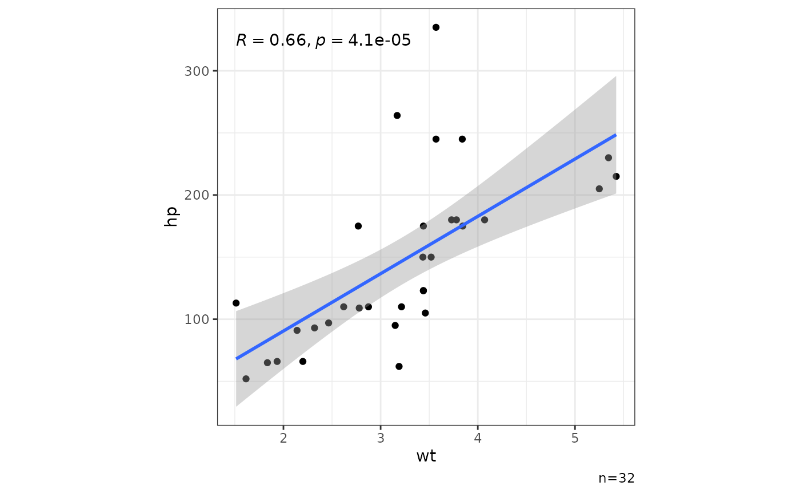
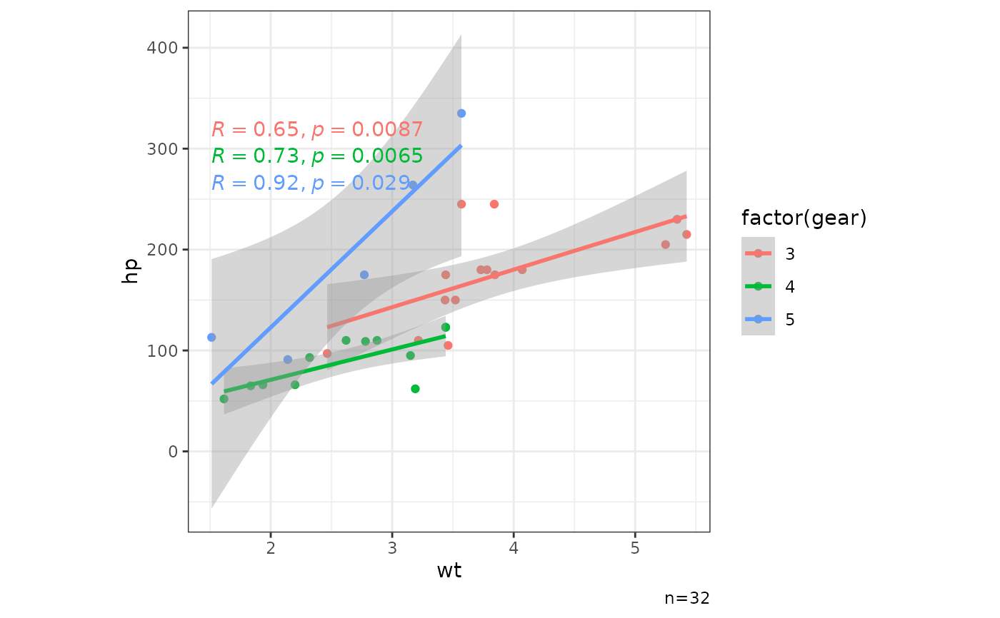
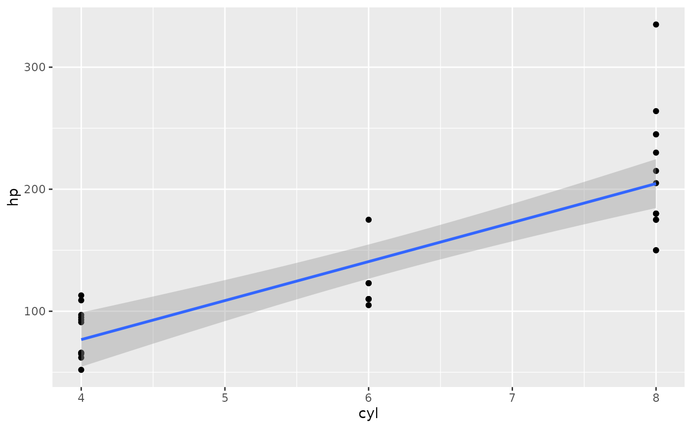
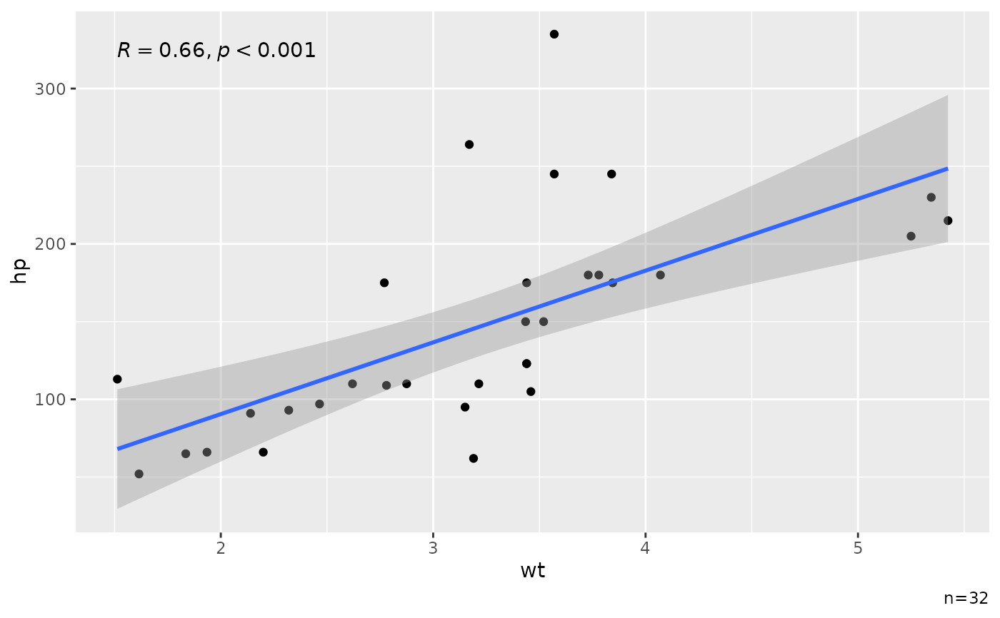
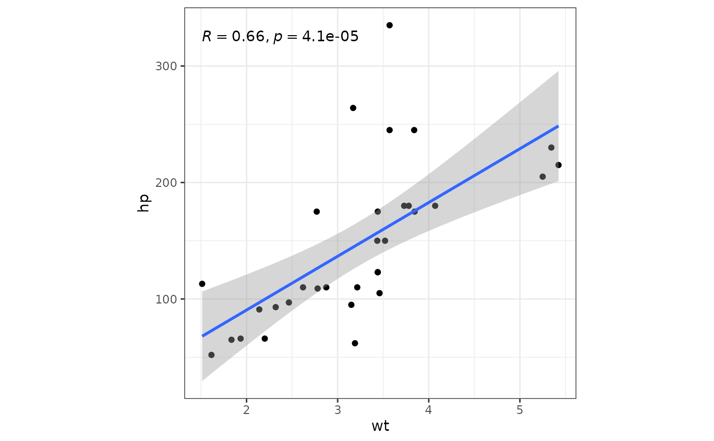
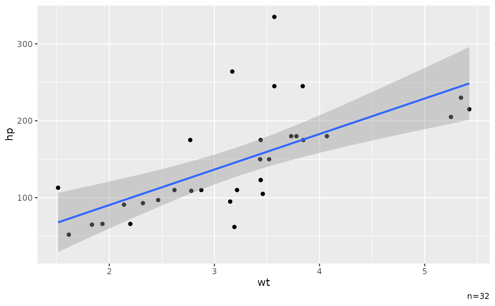

Create basic XY scatter plot for quick data exploration.
Default to show Pearson correlation coefficient with p-value using ggpubr::stat_cor().
For more complex plots, it is recommended to use ggplot2::ggplot2 directly.
Arguments
- d
<dfr>A data frame.- x
<var>Variable for the x-axis as unquoted name.- y
<var>Variable for the y-axis as unquoted name.- ...
Other arguments for ggplot2::aes for additional mapping.
- lm
<lgl>TRUEto add regression line from linear model.- se
<lgl>TRUEto show standard error with the regression line.- cor
<lgl>TRUEto show Pearson correlation coefficient with p-value.- pacc
<dbl>Precision for the p-value, e.g., 0.0001 to show 4 decimal places.
Examples
mtcars |> ggxy(wt,hp)
#> `geom_smooth()` using formula = 'y ~ x'

mtcars |> ggxy(wt,hp,col=factor(gear))
#> `geom_smooth()` using formula = 'y ~ x'

mtcars |> ggxy(wt,hp,col=factor(gear),pch=factor(am))
#> `geom_smooth()` using formula = 'y ~ x'

mtcars |> ggxy(wt,hp,pacc=0.001)
#> `geom_smooth()` using formula = 'y ~ x'

mtcars |> ggxy(wt,hp,se=FALSE)
#> `geom_smooth()` using formula = 'y ~ x'

mtcars |> ggxy(wt,hp,lm=FALSE)
mtcars |> ggxy(wt,hp,cor=FALSE)
#> `geom_smooth()` using formula = 'y ~ x'
